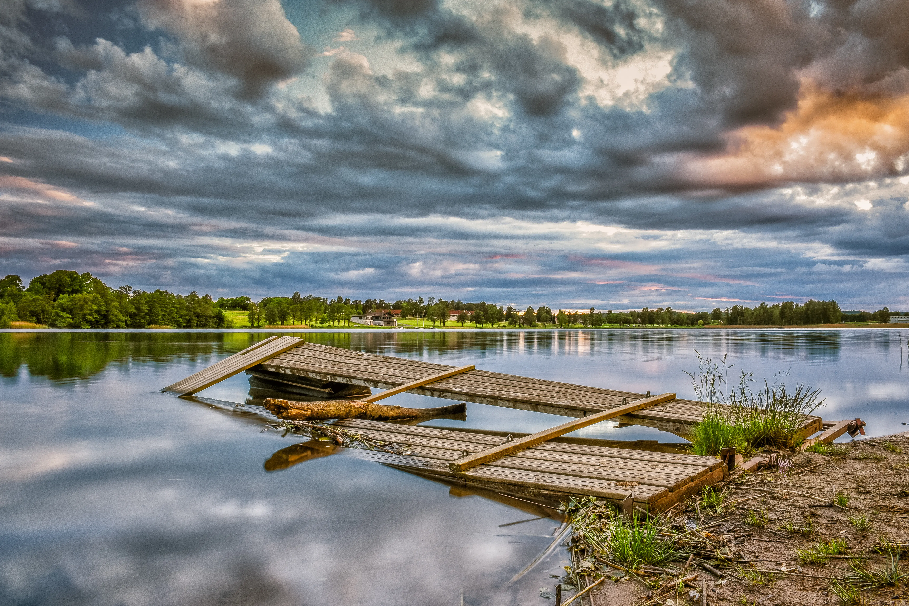
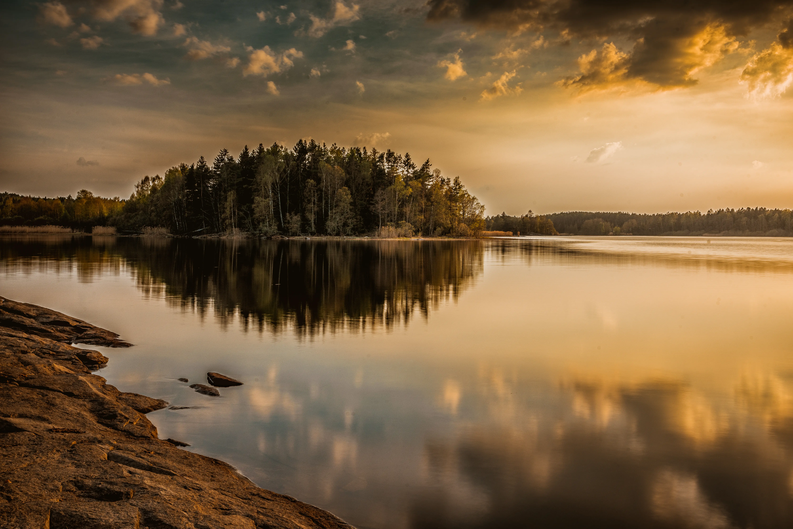
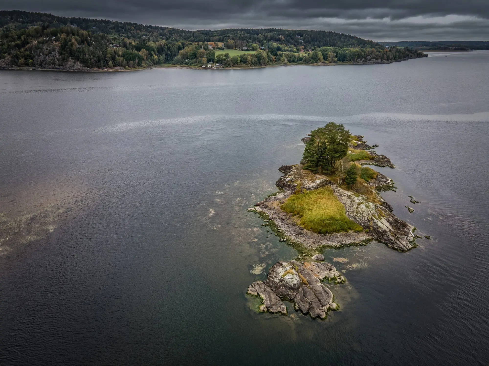
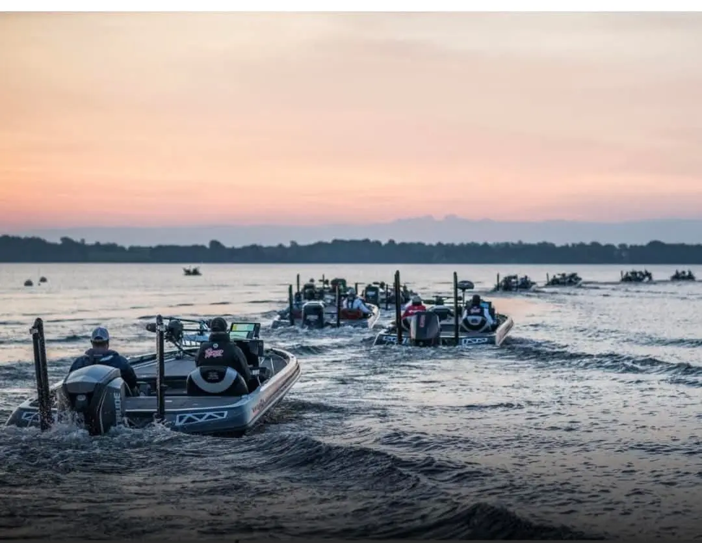

Organizatorzy zawodów to wędkarze z wieloletnim doświadczeniem, dla których wędkarstwo jest prawdziwą pasją. Od lat rozwijają swoje umiejętności, poznają nowe techniki oraz spędzają każdą wolną chwilę nad wodą. Z miłości do wędkarstwa organizują zawody, które mają nie tylko charakter sportowej rywalizacji, ale przede wszystkim integrują ludzi o wspólnych zainteresowaniach.
Celem organizatorów jest tworzenie wyjątkowej atmosfery, w której zarówno doświadczeni zawodnicy, jak i początkujący wędkarze mogą wymieniać się doświadczeniami, poznawać nowych ludzi oraz wspólnie przeżywać emocje związane z rywalizacją. Organizatorzy cenią zdrową konkurencję, zasady fair play oraz dobrą zabawę, dzięki czemu każde zawody są niezapomnianym wydarzeniem dla uczestników.
Wszystko to organizowane jest całkowicie za darmo, ponieważ organizatorzy działają jako organizacja non profit. Robią to z pasji i chęci rozwijania społeczności wędkarskiej, a największą satysfakcję daje im możliwość łączenia ludzi oraz wspólnego spędzania czasu nad wodą.

Zobacz, w jakich okolicznościach przyrody toczymy nasze zmagania.




